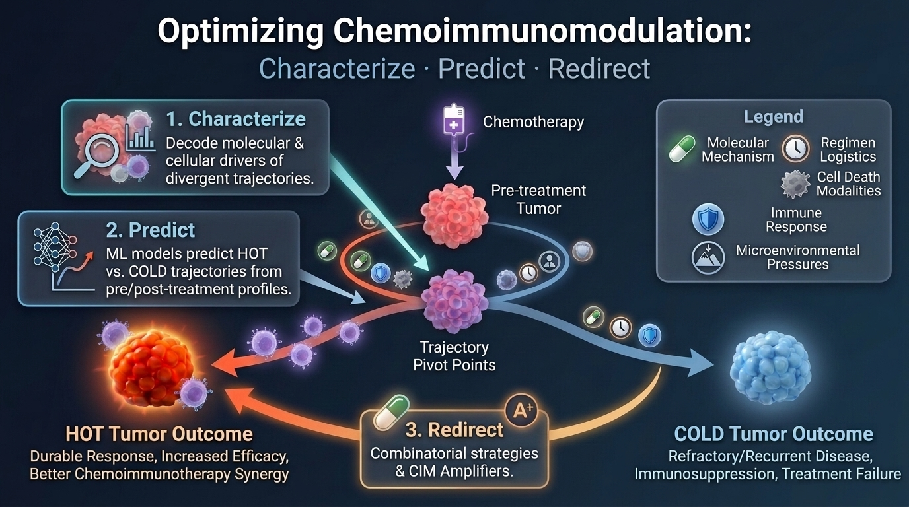

The Gbadamosi Lab aims to eliminate cancer therapy resistance, lethal recurrence, and improve survival in aggressive cancers. To achieve this goal, we integrate computational, molecular, and cellular biology approaches to characterize and optimize the immunomodulatory potential of first-line chemotherapeutics, ultimately enhancing chemotherapy and chemoimmunotherapy efficacy, immunologic benefit, and response durability, while concurrently fostering the success of the next generation of trainees through mentorship, innovation, and a culture of excellence.
UF College of Pharmacy · PTR
Optimizing Chemoimmunomodulation
The Gbadamosi Lab integrates computational, molecular, and cellular biology to characterize and optimize how chemotherapeutics remodel the tumor microenvironment, enhancing chemotherapy efficacy, response durability, and downstream chemoimmunotherapy synergy in aggressive cancer.

What We Do: Characterize · Predict · Redirect
Chemotherapy does more than kill tumor cells; it reshapes the tumor immune microenvironment along divergent trajectories. In the Gbadamosi Lab, we characterize the molecular and cellular drivers at these trajectory pivot points, build computational models to predict which path a tumor will take, and design combination strategies to redirect cold, resistant tumors toward durable, immunologically hot responses.
Research Pillars
Characterizing and optimizing chemotherapeutic immunomodulation to drive durable responses.
Chemoimmunomodulation
Characterizing and optimizing how first-line chemotherapeutics remodel the tumor microenvironment, paired with computational models to predict chemoimmunomodulatory induction trajectories.
Chemotherapy & Immunotherapy Synergy
Translating optimized chemoimmunomodulation into enhanced chemotherapy efficacy, immunologic benefit, response durability, and downstream immunotherapy synergy.
Breast to Brain Metastasis
Investigating tumor-immune remodeling, therapeutic resistance, and vulnerabilities in breast cancer brain metastases to improve survival in aggressive disease.
New & Notable
Recent milestones, publications, and lab updates.